IHISGeneral
The IHISGeneral interface is the original interface for the Hatchery Information System, and was one of the first parts of the program written. The great majority of plugins used in the Hatchery Information System will implement this interface on one or more objects.
The key to a plugin based on IHISGeneral is that it can be located somewhere on the screen. The plugin object can be a side stall, bottom stall, button bar, or raceway picture type. Side stall objects can be dragged and dropped on a target, bottom stall objects have fish dragged and dropped on them, button bar objects can do a variety of things affecting the whole hatchery, or just some selection, and raceway picture objects give information to the user about a certain rearing unit through tooltips and in response to mouse clicks.
The object instances also have some say as to where and how they are displayed, but these can be overridden by the main program. For example, a side stall icon might want to be in the upper left stall, but there could be a few different plugins that want to be in the same location. If this happens, the program will choose which one gets the stall, and locate the others in one of the other stalls. Also, the number of stalls depends on the size of the screen, so a larger screen will have more stalls to choose from. A plugin trying to be in the lower left stall will have a hard time getting that one, as which stall the lower left stall is, would depend on the screen size.
Objects implementing this interface primarily respond to a single method called On Drop. Technically, since some of the interactions are only through clicks, not drops, this method name is a bit wrong, but this imprecision reflects the ancient roots of the object when clicking and dropping were two separate methods and each object decided which one it would respond to and which it would ignore. The modern design simplified the interface by getting rid of the redundant method, but the name still remains as a legacy of the ancient roots of the IHISGeneral interface.
Any plugin that implements this interface can also have a configuration, which would be added to the Configuration menu in both the Current Time View and/or the Move Web View, if applicable. The configuration is purely optional, and can be added either in the base configuration menu, or into a sub menu within the configuration menu. Furthermore, button bar plugins can also add menu alternatives to the button. A menu alternative can be a root menu item, or can be added into any existing menu tree at any point. Doing this makes no sense for any plugins other than button bar plugins, but side and bottom stall plugins will be placed on the View menu, which will toggle their visibility on and off.
Existing Button Bar Plugins
Hatchery Designer
The hatchery designer is used to layout the rearing units for an individual hatchery. The user can arrange the rearing units in grids, using any shapes that are available. Once they have the grids of rearing units laid out, the user can set the names, sizes, depths, orientation, and keyways for any set of the rearing units. Attention was paid to making the designer quick and easy to use, but since this is something that may only be used once in the life of any given hatchery, little attention was paid to sprucing up the graphics. The plugin is full-featured and easy to use, just not terribly appealing to look at.
The hatchery designer plugin used to be a built-in part of the Hatchery Information System, but it was moved to a plugin because there could be any number of hatchery designer alternatives. The fact that something as fundamental as hatchery layout can be a plugin made me feel pretty confident about the versatility of the plugin design.
Feed Mass Entry
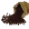This plugin is closely related to the Mortality mass entry plugin. The same features are generally retained, though the mark specific button has been removed, as feed is not related to marks. The comment button is retained, though commenting on feed seems like a poor idea. Drag copy across multiple rearing units makes considerable sense for feed, though, as the same amounts will be fed to several rearing units, possibly at the same time.
Ultimately, the plugin shows a grid of locations and feed amounts by day for an entire month at a time. Viewing feed amounts this way is probably not the best, but entering and editing in this plugin is ideal. For viewing the data over time, the RWPB Feed plugin would likely be superior.
General Event Viewer
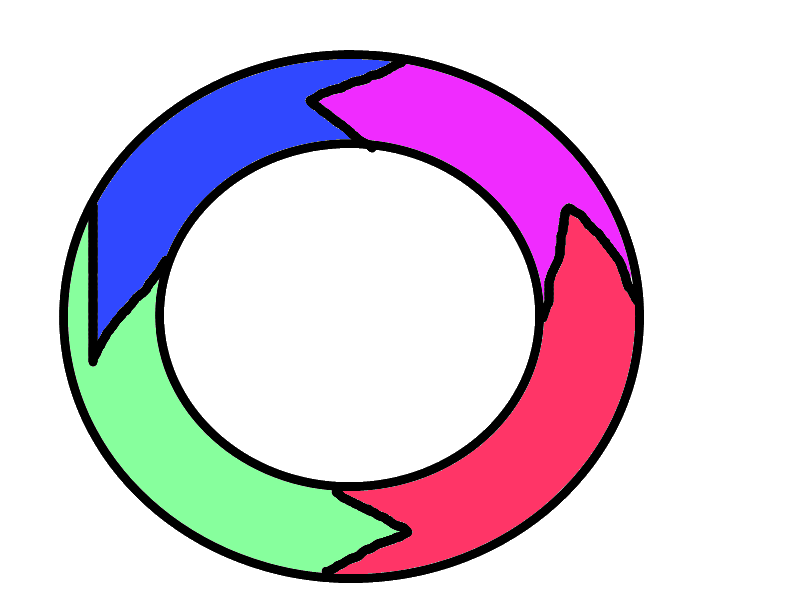The event viewer is part of the time travel group. The original idea behind the time travel plugins was to allow the Current Time View to show the state of the hatchery at different times. The only reasonable times to view were just before, or just after, certain events such as moves, as those were the only times when the display might materially change. Of course, since mortality events are moves, there could be any number of these. Ultimately, though, the time travel concept was not such a good idea. After all, the Current Time View could only show one point in time, whereas the Move Web View could show a range of time, so once the Move Web View was created, the time travel aspect of this plugin no longer made sense. Still, the time travel plugins had a real value, as they showed events in order, with a means to show/hide different types of events. This allowed an easy means to see relevant actions in order. Thus the plugins remain, even if the time travel part might as well be removed.
The general event viewer shows all events for the hatchery, with the ability to filter on various categories and to change the date range of events. The date range is because the event viewer could potentially show every event for the hatchery, which is almost certainly more than anybody would want to see. In general, this plugin is probably of less use than the raceway version, as people will likely tend to focus on the events for individual locations. Still, this plugin does allow people to see the relative order of actions across the whole hatchery, which does add value.
Genetic Information
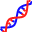This plugin shows three different things, so the user must first choose what it is they want to look at. The first option is to show the genetic information for all fish currently on station. The second option is to show the genetic disposition for some species and brood year. The third option is to show the disposition for one genetic ID or parent ID.
The first will show the genetic IDs and numbers for fish currently at the hatchery. The second will only work so long as both species and brood year are available, but will show what happened to any genetic IDs from that group. They might still be on hand, they might have been released, and some number will have died. The final option is to see what happened to one group of fish. This will show where they ended up, if they are on hand, released, transferred, or dead. Of course, the numbers in all cases are just estimates with unknown error bars.
The reason the plugin was created was just to show that it was possible. There is no particular reason to solely focus on genetics, as the same action could be performed for any trait, not just genetics. The point was that it was possible to create plugins that looked at various aspects of any trait of interest, and that such a plugin would be quick and easy to write.
Lot Editor
This plugin is a mass lot number assignment/editor plugin. The idea is that several groups of fish can be selected at once, and they can all get the same lot number. If they have existing lot numbers, the user will be prompted before simply overwriting with the new number.
Not every hatchery cares about lots, but those that do often want to be able to differentially display or color groups based on lot numbers, at least early on. As long as there could be a lot trait, there had to be a lot trait editor, and that’s what this plugin was created to do.
Mass Depth/Flow
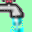Depth and flow are too intimately entwined to separate out. The reason for this integration is that the two go together to generate turnover, which is of interest to lots of hatcheries. One measure without the other makes no sense. This plugin allows the user to see either the depth, the flow, and the turnover for a single rearing unit, or to choose to see the depths or the flow or the turnover for a selection of rearing units. All are displayed as monthly graphs that resemble bar graphs. The reason for the bar graphs is that these are parameters that change only rarely in most hatcheries, so a line graph would pretty much always be a flat line. This pseudo bar graph lets the daily nature of the measures appear, while retaining the line appearance of continuity in a visually enhanced fashion.
Entering or editing values for depth and flow is possible through this plugin using a slick little form that allows for entering numbers directly, or using sliders, or pointing and clicking on a 2D graph where depth is the vertical axis and flow is the horizontal axis. This data entry form can also be used for seeing what impact changes to depth or flow would have on the turnover in the rearing unit, since the turnover changes as the depth or flow is changed, even without saving any changes.
This plugin is the same object as the IMWVSupplemental Mass Depth/Flow plugin and the IColorControl Percent Max Depth/Flow plugin.
Mass Magic Fish
The Magic Fish plugin was the first one written, as it was the only means to get fish into the hatchery, initially. Dragging the side stall icon to each raceway to add fish was reasonable, though not wonderful. Dragging the icon to each of potentially hundreds of trays was unbearable. Thus the mass magic fish plugin was created as a means to quickly enter numbers of fish into large numbers of trays.
The species, stock, and brood year traits must be the same for all the fish entered in any one event. Genetic information can also be entered, but follows different rules, as genetic IDs will generally differ between different groups of eggs. Basically, the user selects some set of rearing units and can then enter a number for each, with an optional genetic ID for each.
Mortality Mass Entry
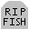The plugin shows a grid with the rows being all selected rearing units (or all rearing units if none are selected), while the columns are the dates. The rows will be shown in the default sort order for the hatchery. Comments and mark-specific mortality can be entered using a pair of buttons in each cell. Any cell for a date and rearing unit that had no fish will be grayed out. Thus, it isn’t possible to enter mortality information if there are no fish.
Entry can be done much like Excel, as drag-copy is possible, as is navigation via the tab key. Multi-level undo is also available, including for drag copy. Drag-copy works in 2D, so it is possible to flood fill a number of cells very quickly, though any grayed out cells will not be filled. The plugin makes use of the Mortality API for storing data.
Projected Release Site and Date
This plugin probably has to change a bit, as it depends on some mapping code that isn’t necessarily available to everybody. The idea for the plugin is that a hatchery can indicate where, and possibly when, a group of fish will be released. This is largely done so that the IColorControl Release Prediction plugin can be used to display how release groups are organized within the facility. Coloring the rearing units based on where the fish will end up, is a design I have seen employed at various hatcheries over the years, so this plugin allows the Hatchery Information System to replicate that. Managing the release sites is a bit problematic, as the best way to visualize release sites is using maps, and those tend to be proprietary.
Return To Present

The return to present plugin is part of the time travel group. It may have no utility at all if the time travel aspects are removed form the other plugins in the time travel group. The sole purpose of the plugin is to return the Current Time View to showing the current time after the time had been switched to show some other time using one of the time travel plugins. No time travel would mean no purpose for this plugin.
RUB Sorter
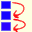This plugin was created after showing the Hatchery Information System to the staff at one particular hatchery. They said that they always visit vats in order, but not in numerical order. Therefore, they wanted to be able to sort the rearing units into whichever order worked for them, and then have the rearing units retain the sort order they had indicated for future use.
The plugin shows any selected set of rearing units in a listbox. The user can then drag the rearing units into whichever order they choose. Once they save the layout, all plugins that ask for rearing units will get them sorted using this sort order. Restoring the default sort order, which is a mix of string and number sorting, is also possible from this plugin.
Many strange orders are possible with this plugin. Selecting overlapping groups of rearing units and arranging them in different ways can result in some unusual ordering in the aggregate. Other sorting plugins could also be created that allowed for different sort styles. Also, any other plugin could ignore the default sort order that this plugin creates and implement their own sorting for their own purpose.
Interestingly, as fun and useful as this plugin can be, it took only about three hours to write from start to finish.
Weight Mass Entry
This plugin is closely related to the Mortality Mass Entry plugin. In fact, it was created in a few hours by copying the mortality plugin, further showing the utility of the plugin concept. All the functionality is identical, except that the button for mark specific data was omitted, as weight is not mark specific. The comment button is still there, as is the ability to drag copy. Frankly, nobody should use either comments or drag copy for weight, as neither one makes much sense, but the functionality is there if somebody wants to use it.
Creating a similar plugin for lengths would be so easy it wasn’t worth doing. The only changes would be some wording, validation rules, and one attribute sent to the weight API, which both length and weight would use for storing data.
Note Log
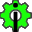The note log plugin intercepts and records error notes raised from anywhere in the program. The icon is dynamic, as it flashes and changes appearance if an error is received. Clicking on the button brings up a grid showing all errors and information related to them. These will then be either cleared by the user, or saved to the DB along with a time stamp. The primary use of the plugin is for debugging, but it has a general interest, as it shows quite emphatically when something has gone wrong.
Release

The button bar release plugin is part of the release group, most of which are bottom stall options. This plugin allows for very nuanced, complicated releases involving multiple moves from multiple locations to multiple trucks, which are all part of the same overall release. In general, the bottom stall release options are easier to use, but more simplistic.
Existing Side Stall Plugins
Feed Projections
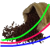The feed projections plugin was created because the first or second question I was asked by the staff of every hatchery that saw the early versions of the Hatchery Information System was, “can it do feed projections?” If that’s the first question, the answer had better be, “yes.” However, there are so many things that can be done with feed projections that this is only one possible answer. At least one other plugin would almost certainly be needed, as there are at least two common approaches to feed projection.
The plugin is primarily a form that has multiple tab pages. The first tab page shows the graph of growth, along with some statistics about current size. The second page shows a tabular layout of how much should be fed each day. The third page shows some information on feed conversion in the past, while allowing the user to edit that to some extent. The user can also select feed types and manage automatic feed selection. There are also some summary statistics for the projection period, which change as the growth curve is raised or lowered. The final page is the rationale page, which is the beginning of an expert system.
On the first tab page, the user is shown a graph that has a variety of lines on it covering the projection window. The number of lines depends on the information available. The user sets the length of the projection window, which defaults to 30 days. One line that will always be on the graph is the projection of growth through the projection window if growth continues as it is at the current time. A second line will show what the hatchery staff was expecting growth to be when they last set the feed projection, as long as a previous projection was set. A third line, if available, will show how similar fish in this location grew in either the previous year, or an average of the last three years, for the same time period. Lastly, if there is a target size at release, a line will show what growth would need to average to hit that target based on the current starting point.
There is one further line, which is essentially the first line, but has a thumb button so that the user can raise or lower the expected growth through the window. Changing the growth will then change the feed amounts displayed in tabular format on the next tab page. This line is the suggested growth curve, which is the only one that can be manipulated, since the other lines are based on existing data.
If a hatchery has enough data, it would be possible for the plugin to estimate what growth will result from what feed strategy, such that the plugin can suggest a feed strategy. In this plugin, such an expert system is only in a rudimentary state, but it is a beginning. For example, if the user decides to increase the feed to try to boost growth in raceway 1, then when they look at raceway 2, the rationale might have already suggested a similar boost, if the fish are sufficiently similar in type and size. At the very least, the suggested growth line will be based on trying to reach some objective, whether correctly or not. There is a lot going on in this plugin, and a whole lot more could be going on.
Genetics Editor
The genetics editor plugin was created to fill a gap created by the Magic Fish plugin group. Those plugins could add fish with or without genetic information. This plugin allowed genetic information to be added or edited at a later date.
Lot Editor
The plugin provides a means to see/edit the lot number for some location. The plugin is a finer tuned instrument than the mass lot editor plugin.
Magic Fish

The magic fish plugin, along with the Mass Magic Fish plugin, are the primary means to adding fish to the hatchery. There are many different plugins that could be created, this is just one of them. In this plugin, there must be a species, stock, and brood year along with a number. There can also be genetic information, lot information, and an arbitrary trait called a pseudo-stock.
Mark Quality
When dropped on a location, this plugin allows the user to enter or edit the mark quality information for some mark. Of course, if the fish don’t have any marks, the plugin simply objects. Mark quality is a total number of fish, a number good, a number bad, and a number partial if that applies to the mark in question. Partial mark quality may or may not be desirable information for some hatchery operations, as partial marks may or may not be distinguishable at a later date. The option to enter partial marks is included for completeness.
The plugin packages up data and sends it off to the Mark Quality API.
Multi Characteristic Editor
The multi characteristics editor was created to fill a gap created by the Magic Fish plugin group. Those plugins could add fish with fixed stock, species and brood year. This plugin was added to allow for editing that information after the fact, while also adding other traits that are largely anonymous. Essentially, the anonymous traits are a way to add some arbitrary label to a group of fish.
While this plugin exists for both Move Web View and Current Time View, the behavior of the plugin can be quite different in each. In Move Web View, the traits in some early move of a large web can be edited, thereby causing trouble with other parts of the web as mixing traits may not be allowed. Since Current Time View is dealing only with the present time, the traits will already be mixed, so there already isn’t an issue and the plugin can’t create one. In Move Web View, problems are largely avoided by changing all of the traits for all of the moves at once.
Projected Release Manager
A side stall version of the Projected Release and Date plugin. The side stall version is easier to use for assignments to individual rearing units, but not as good for assignments to large numbers of rearing units.
This plugin has the same issues as the button bar version, as the best way to manage release sites is using a map, which is a problem since mapping code tends to be proprietary and fiddly. For that reason, this plugin is not currently functioning.
RU Renamer
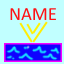All rearing units are given names automatically, often based on keyways or the base name of the structure. The automatic names can be made to be right over 90% of the time, but there will be times when a different name will be desired. This plugin allows the user to assign a specific name to a specific rearing unit. Any name assigned using this plugin will be visible to anybody who views the data, which means that the name will be retained through exports and transfers, as well as being available to all instances of the Hatchery Information System at any one hatchery.
Trait Explorer
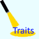When dropped on a location containing fish, the plugin will allow the user to choose some set of one or more traits and show the number of fish in that location with those traits. The user can add and remove traits to see various numbers for the move or location in question. The plugin must be dropped on a location containing fish, as it is meaningless if there are no fish. However, when dropped on a proper location, there will be a slider allowing the user to see the traits at different times while the fish were in the location.
Weight
When dropped on a location containing fish, a form pops up for the user to enter the weight into. The plugin responds to the weight units set for the Hatchery Information System, and will show a ghost number of what the Growth Core expects the weight to be, in those units. Therefore, if the user is about to enter a number that is radically different from what is shown, they’ll have some warning that they are either entering weight in the wrong units, or that something else might be wrong with the value.
This plugin is pretty nice if there are only a few weights to enter, which is often the case. The mass entry option was created to cover the case where lots of weights need to be entered. The mass entry version doesn’t have the ghost numbers, though, as I felt that might be too costly to populate in a timely fashion.
Creating a plugin for length based on this plugin would be so easy I didn’t bother doing it. To change this for length would only entail changing the units, text, and validation. The plugin writes to the Weight API, but the weight API is actually a size API, as it takes either weight or length.
Existing Bottom Stall Plugins
Mortality
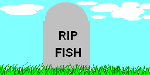The original idea behind the Hatchery Information System was that everything could be done via drag and drop. Thus, mortality can be entered by dragging fish from a rearing unit to this bottom stall plugin, at which point a box pops up for entering the number. This works nicely for one or two rearing units, but would become terribly tedious for lots of rearing units, hence the button bar mortality plugin.
Transfer I/O
This plugin is not fully finished. The intention is to allow transfers between hatcheries. Transfers are a complicated subject, as all of the information about the fish should be included in the transfer. As it turns out, the only thorough way to accomplish that is by transferring the entire move web. Without that, the receiving hatchery wouldn’t be able to correctly understand the relationships between dependent traits. Therefore, this plugin packages a move web into a zipped, XML-serialized, file.
The plugin also includes an importer, which is even more involved, and is the part that is not completed. Several steps have to be covered before testing such a plugin is possible, and I haven’t gotten all those steps completed, yet. For example, I have to have two different installations of Hatchery Information System, or two hatcheries in the same system, such that one can export and the other can import. The importer will be a side stall plugin, as the user will drop the fish wherever they should be going.
There also needs to be a transfer editor, which is a whole different can of worms, as the sender can edit a transfer package without alerting the receiver. There is no automatic way to handle a lack of communication between people.
Transport Release

While the icon is a truck, this release plugin allows for release by truck, pack, airplane, helicopter, boat, mixed, and other. Fish can be released by pounds of fish or numbers of fish, and a series of other traits can be tracked, including a few temperature measures, location, date ranges, and some transportation statistics.
There can be any number of different release plugins, since there can be any number of release traits that should be tracked. This plugin tracks what are probably the most common. A configuration option allows traits to be required or not, and allows for defaults to be set. That’s pretty convenient for hatcheries that always release their fish at the same place, or by the same method.
Volitional Release
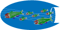The volitional release plugin is a variant on the transport release plugin. They are pretty similar, except that volitional releases will always have a date range, will never have a transport method, and are also lacking most of the other transportation statistics.
Existing Raceway Icon Plugins
Depth / Flow
This plugin is a raceway variation on the button bar depth/flow plugin. Since it is a raceway icon plugin, it will only show the depth, flow, and turnover for the rearing unit which was clicked on. The plugin does allow entering and editing of values, as it is the same essential form as the button bar plugin.
Egg Info One
A simple reporting plugin that shows the species, stock, brood year, and what’s called a virtual stock (also called a pseudo stock) with the marks found on the eggs. The form has at least that one tab, but may well include other tabs, with different tabs for different stocks.
This plugin is similar to the Mark Report One plugin, but it’s simpler. Mixing stocks is possible, even with eggs, but virtually no marking is possible.
Event Viewer
The event viewer is part of the time travel group. The original idea behind the time travel plugins was to allow the Current Time View to show the state of the hatchery at different times. The only reasonable times to view were just before, or just after, certain events such as moves, as those were the only times when the display might materially change. Of course, since mortality events are moves, there could be any number of these. Ultimately, though, the time travel concept was not such a good idea. After all, the Current Time View could only show one point in time, whereas the Move Web View could show a range of time, so once the Move Web View was created, the time travel aspect of this plugin no longer made sense. Still, the time travel plugins had a real value, as they showed events in order, with a means to show/hide different types of events. This allowed an easy means to see relevant actions in order. Thus the plugins remain, even if the time travel part might as well be removed.
The raceway icon event viewer shows the events that impacted that raceway with the ability to show or hide various types of events. In general, filtering can be on moves in, moves out, size changes for the rearing unit, or data addition types of events (e.g. size, etc.). Filtering on other categories is possible, with other categories being shown in a list. Also, the date for events can be restricted to “since fish were added” or “since the last time the rearing unit had fish”.
Feed
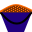The main point of this plugin is to show feed over time for a group of fish in a rearing unit. The display is a bar graph, with one bar per day, and scrolling dates is possible. Editing the feed amounts can also be done by double clicking on one of the bars in the graph. The plugin will show feed with single types, multiple types, medicated, and non-medicated, all on the same graph.
Genetic Information
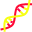This plugin was an early plugin created to show the utility of the trait component of the Move Web by showing where a group of offspring ended up in the hatchery. What the plugin shows is the parental groups found in the current location along with the numbers of each group. There are also tabs for the male and female parents, if that information is available. Whether or not that information is available depends entirely on what genetic information is entered.
Growth Graphics
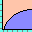This plugin is only available for locations that include fish, never for eggs. The plugin shows the growth of the fish over time in the location in question. Significant points along the curve are indicated by icons, such as measurements, estimated values, and changes in the intended growth due to changes in feed. The curve also projects the growth into the future, though not very far into the futur
The curve has a slider bar over it so that the user can see the estimated weight for any point in time on the curve. Also, the growth can be shown by month, or for the total duration in the location.
Mark Report One
A simple reporting plugin that shows the species, stock, brood year, and what’s called a virtual stock (also called a pseudo stock) with the marks found on the fish. The form has at least that one tab, but may well include other tabs, with different tabs for different stocks. Each tab will show a breakdown of the marks on that stock, in the case of mixed stock rearing units.
This plugin only works in rearing units that have fish. The Egg Info One plugin is used to show similar information for rearing units that hold eggs.
Existing Menu Only Plugins
Communication Monitor
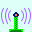This plugin was largely created because I could. It shows the versatility of the plugin system, though it likely does little of interest to people. The plugin was mostly intended to help with diagnosing any communication issues with the Communication model. The form that pops up shows things like how many instances of the Hatchery Information System are active, what the last message was, who is the godfather, and things like that. There is also the ability to take over the Godfather role for the current instance, though since the role is usually automatic, taking over the role is mostly just for testing.
Communication Tester

Similar to the Communication Monitor, this plugin was created to help with diagnosing communication issues. The tests may not be all that useful, either, as they attempt to flood the system with lots of UDP messages and track how many get lost. The plugin might show a noisy system, but might also show nothing at all.
Condition Factor View
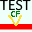This plugin is part of the test harness group and is not intended for production, though the concept might have value beyond testing. The idea is to show what condition factor value is used for certain times. To make it more useful, it would be more reasonable to make this a side stall plugin, but condition factors, as shown in this plugin, are some internal data used by the Growth Core model. I haven’t figured out what should be shown to a wider audience in a more useful fashion.
Large Test Harness
Perhaps the strangest plugin in all of the Hatchery Information System is the set of plugins in the test harness group, where the Large Test Harness is the original part. What the plugin does is harness the Event Raiser object to ask plugins for tests. Any plugin can create tests, which could be either unit tests or integration tests. The idea is that anything that can be tested could be added as a test, and the large test harness gathers the tests and allows the user to see all the tests from all the plugins and run any or all. The quality of the tests is up to the individual plugins that publish the tests, but by building up a series of tests, it should be possible to improve the quality of any individual plugin, as the tests will show whether or not any change has broken the assumptions of the plugin.
It is not expected that the Large Test Harness plugin, or any other plugin in the test harness group will be used in production. They have no place outside of testing.
SQL Display
The SQL Display plugin is part of the test harness group, and is not intended for production. The plugin works with the SQL Interceptor plugin, as it shows results, whereas the SQL Interceptor only gathers data. This plugin is only useful for some very specific testing.
One thing to note is that this plugin requires that the testing DB be available, as that’s where all results from this plugin are written. The testing DB will not be available on most installations of the Hatchery Information System.
SQL Interceptor
The SQL Interceptor plugin is part of the test harness group, and is not intended for production, but only as a means to facilitate automated testing of the Hatchery Information System. All that the plugin does is sets the Test Mode flag in the Event Raiser object. Any complying plugin will not write to the DB if this flag is set. Instead, any generated SQL is stored and written to the DB along with all parameters. In other words, this plugin allows the user to take some action and see all SQL that is generated and the order in which SQL statements are executed, along with the parameters used. Not all plugins will do the right thing with the Test Mode flag, though, and there is no way to enforce this. This plugin is only useful for some very specific testing.
One thing to note is that this plugin requires that the testing DB be available, as that’s where all results from this plugin are written. The testing DB will not be available on most installations of the Hatchery Information System.